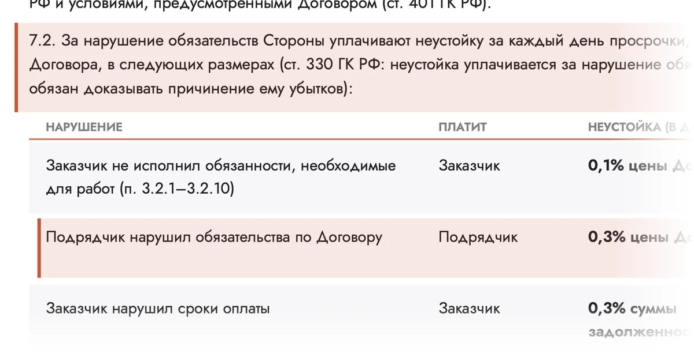
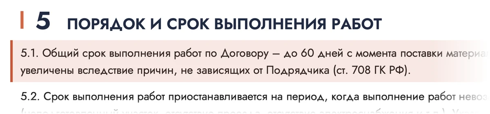
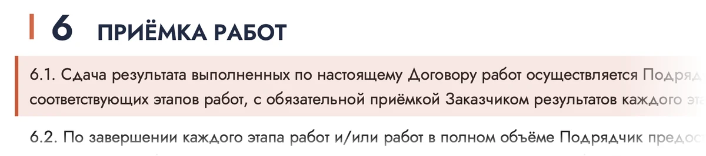

Шапка про сроки — ещё 10 вариантов
По мотивам понравившихся 10, 2 и 3. Каждая шапка опирается на пункты договора, а в вариантах 4, 7, 8, 9 и 10 — настоящие фрагменты договора с подсветкой.
Советую: 7 — настоящие пункты договора прямо на экране, самое сильное доказательство; 4 — вопрос из варианта 2 и ответ документом из варианта 3; 1 — спокойный первый слайд, как 10, но с доказательствами.
Слайд с лентой договора
по мотивам 10- Идея
- Первый слайд остаётся спокойным, а внизу — лента из трёх пунктов договора. Её видно сразу, и она не спорит с заголовком.
- Почему продаёт
- Выгода — в заголовке, доказательство — в ленте. Три номера пунктов читаются как проверяемые факты, а не как реклама.
- Риск
- Лента закрывает низ фото — выбрать снимок, где дом выше середины.
Каркасные дома под ключ. Срок и неустойка — в договоре
Срок работ, неустойка за просрочку по нашей вине и право в любое время узнавать, как идут работы, — всё это пункты договора.
Номера пунктов крупно
по мотивам 10- Идея
- Вместо больших цифр про дни — большие номера пунктов договора.
- Почему продаёт
- Крупные цифры притягивают взгляд, как статистика. А номер пункта — факт, который можно найти в договоре.
- Риск
- Без подписи номер ничего не значит — подписи короткие и крупные.
Сроки стройки — по пунктам договора
Каждый этап принимаете вы
по мотивам 10- Идея
- Показать стройку как четыре этапа: за каждый вы подписываете акт.
- Почему продаёт
- Контроль снимает страх «затянут»: видно, что стройка идёт по шагам, и каждый шаг принимаете вы сами.
- Риск
- Этапы оплаты на странице «Как заказать» сейчас расходятся с договором — сначала сверить.
Каждый этап стройки принимаете вы
Сдаём дом по этапам, и за каждый вы подписываете акт (раздел 6). Срок — пункт 5.1, за просрочку по нашей вине — неустойка по пункту 7.2.
- Доставка и начало работбригада уже на участке
- Пол и основание стенпроверяете и подписываете акт
- Кровля и внешняя отделкаснова акт — и следующий этап
- Приёмкаитоговый акт
«А если затянут?» и настоящий пункт 7.2
по мотивам 2- Идея
- Тот же вопрос, что в варианте 2, но ответ виден глазами: рядом настоящий пункт договора.
- Почему продаёт
- Вопрос цепляет страх, фрагмент договора тут же его снимает. Документ убеждает сильнее любых слов.
- Риск
- На фрагменте видно слово «неустойка» и начало таблицы — показать юристу до публикации.
А если стройку затянут?
Ответ — в пункте 7.2 договора: за просрочку по нашей вине платим неустойку. А сам срок записан в пункте 5.1.

Про сроки отвечаем пунктами договора
по мотивам 2- Идея
- Карточка из четырёх вопросов: на каждый — короткий ответ и номер пункта.
- Почему продаёт
- Снимает возражения до того, как их зададут. Номер пункта рядом с ответом — доказательство, а не обещание.
- Риск
- Четыре вопроса — предел, больше на первом экране не прочитают.
Про сроки отвечаем пунктами договора
Частые вопросы о сроках — и где в договоре на них ответ.
В договоре подряда
п. 5.1Платим неустойку, если просрочка по нашей вине
п. 7.2Продление срока ограничено договором
п. 5.9Да, в любое время — устно или письменно
п. 5.5Честно: за что отвечаем и что сдвигает срок
по мотивам 2- Идея
- Показать обе стороны: сначала за что отвечаем мы, потом что может сдвинуть срок.
- Почему продаёт
- Честный разговор вызывает доверие у тех, кто сомневается: видно, что нечего скрывать. Всё — со ссылками на пункты.
- Риск
- Самый «тяжёлый» вариант для первого экрана — лучше как второй слайд или на странице «Договор».
За что отвечаем мы — и что может сдвинуть срок
За это отвечаем мы
- п. 7.2Просрочка по нашей вине — платим неустойку
- п. 5.1Срок работ записан в договоре
- п. 5.5В любое время отвечаем, как идут работы
Срок может сдвинуться, если
- п. 5.3погода не даёт работать — это оформляем актом
- п. 5.2на участке нет проезда или электричества
- п. 5.9завод задержал окна, покраску или сваи — продление ограничено договором
Настоящие пункты договора с подсветкой
по мотивам 3- Идея
- Не картинка «какого-то договора», а сами пункты 5.1 и 7.2 — с подсветкой нужных строк.
- Почему продаёт
- Человек читает настоящий текст договора — это самое сильное доказательство. Подсветка сразу ведёт глаз к нужному месту.
- Риск
- На фрагментах видны срок и начало условий о неустойке — решить с юристом, какие строки показывать.
Как мы гарантируем соблюдение сроков
Вот эти пункты — без пересказа. Срок работ записан в пункте 5.1, за просрочку по нашей вине — неустойка по пункту 7.2.

Прочитайте договор до встречи
по мотивам 3- Идея
- Главная кнопка — «Скачать договор»: человек сам проверяет, что мы не обещаем лишнего.
- Почему продаёт
- Открытость до встречи снимает страх подвоха. Скачать файл — лёгкий первый шаг, проще звонка.
- Риск
- Скачивание не даёт контакт — рядом обязательно кнопка «Заказать звонок».

Прочитайте договор до встречи
В нём срок работ (п. 5.1), неустойка за просрочку по нашей вине (п. 7.2) и приёмка каждого этапа (раздел 6).
Дом — на фото, срок — в договоре
по мотивам 3 и 10- Идея
- Слева то, чего человек хочет, — дом. Справа то, что его защищает, — пункт договора.
- Почему продаёт
- Пара «мечта и защита» на одном экране: фото даёт эмоцию, документ — спокойствие.
- Риск
- Две половины спорят за внимание — заголовок должен быть крупнее всего.
Дом — на фото. Срок — в договоре.
Срок работ — пункт 5.1. Просрочим по своей вине — платим неустойку, пункт 7.2.
Три слайда подряд: 10 → 2 → 3
по мотивам 10, 2 и 3- Идея
- Все три понравившихся варианта — одним слайдером: выгода, потом страх и ответ, потом документ.
- Почему продаёт
- Каждый слайд — шаг убеждения. Кто долистал до третьего, увидел договор своими глазами.
- Риск
- Второй и третий слайды видят не все — самое важное оставить в первом.